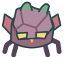

Đang đánh thức khu rừng…
Đang đánh thức khu rừng…✦ BÍ MẬT RỪNG GƯƠNG ✦
Đoàn XePHIÊU LƯU
Cứu một người bạn. Thay đổi cả chuyến đi.

MỐC 1.5 · 2 PHÚT · MỘT NGÓN TAY
01
RỪNG GƯƠNGĐường vào rừng

100
100
02:00Theo xe · Khám phá hai bên rừng
⚑ XE ĐANG BỊ VÂY · QUAY LẠI!
THẦN CÂY · PHA IGiáp đóng
Né báo đòn · Tìm gương nắng sáng
BẢN ĐỒ RỪNG
↔Kéo rồi giữ hướng để chạyThả tay để dừng · Tự đánh khi ở gần
NGHỈ CHÂN MỘT CHÚT
Rừng vẫn đợi bạn
 ✦✦
✦✦ ĐỘ BỀN XE
ĐỘ BỀN XE
QUÁI ĐÃ HẠPHẢN CÔNGNHỮNG NGƯỜI BẠN TRONG RỪNG
Sổ hành trình
Ba cuộc chạm trán, ba cách đồng hành.
Chỉ lưu trên máy · Không gửi dữ liệu lên mạng.
Xoay dọc màn hình để khám phá trọn khu rừng ↻